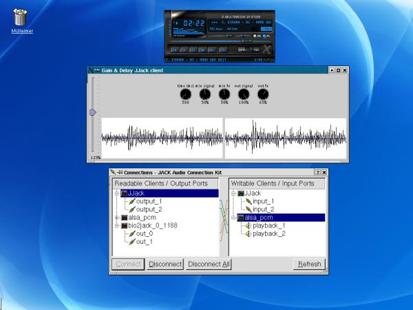
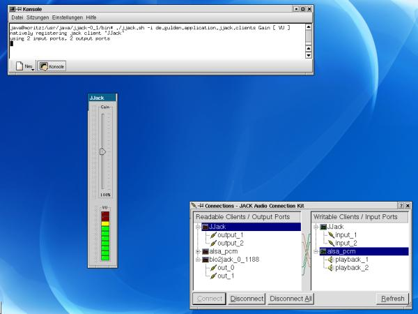

Audio examples
drums_delayed.mp3 (31s, 750 KB)
Drums with delay-effect (example client
de.gulden.application.jjack.clients.Delay)
drums_gated.mp3 (31 s, 750 KB)
Gated drums (example client
de.gulden.application.jjack.clients.Gate)
Example Audio Processors
The distribution package contains some example
audio processors to demonstrate JJack's features, e. g.:
Screenshots
Running the above JJack client. The input is connected from xmms,
output is connected to the 'physical' ALSA device. This
configuration is set up via qjackctl:

Running the Gain and VU clients via the JJack shell application:
